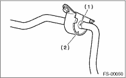

FRONT SUSPENSION > Front Stabilizer
1. Install in the reverse order of removal.
NOTE:
• Install the bushing (on front crossmember side) while aligning it with the paint mark on the stabilizer.
• When installing, make sure that the bushing and stabilizer are labeled with the same identification marks (paint mark).

|
(1) |
Stabilizer identification mark |
|
(2) |
Bushing identification color |
2. Always tighten rubber bushing with wheels in full contact with the ground and the vehicle at curb weight.
Tightening torque:
Jack-up plate to crossmember:
70 N·m (7.1 kgf-m, 52 ft-lb)
Stabilizer link to front transverse link:
45 N·m (4.6 kgf-m, 33 ft-lb)
Stabilizer to crossmember:
25 N·m (2.5 kgf-m, 18.1 ft-lb)